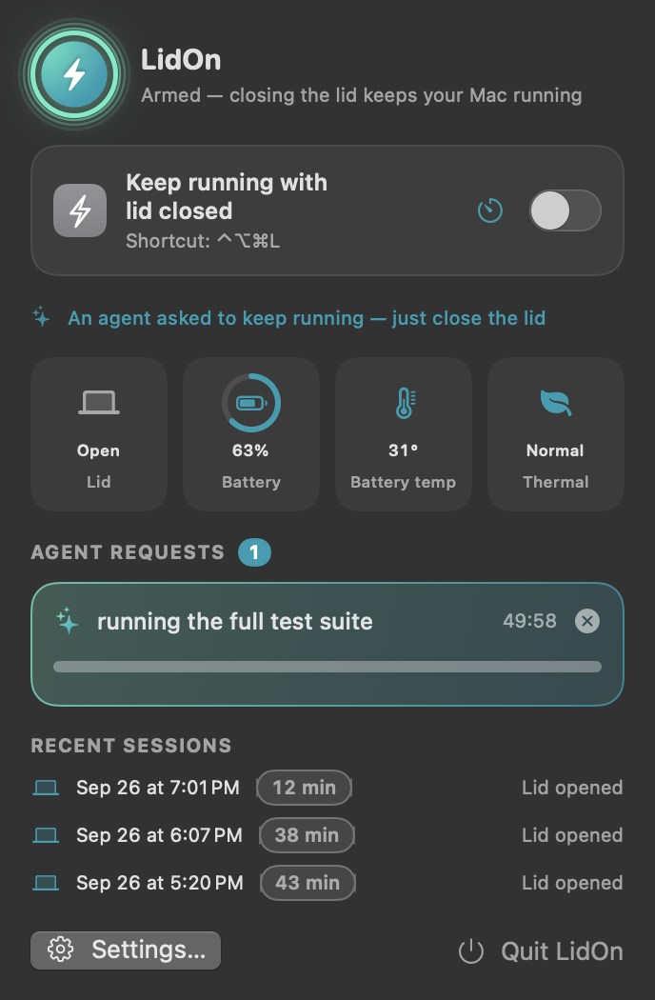
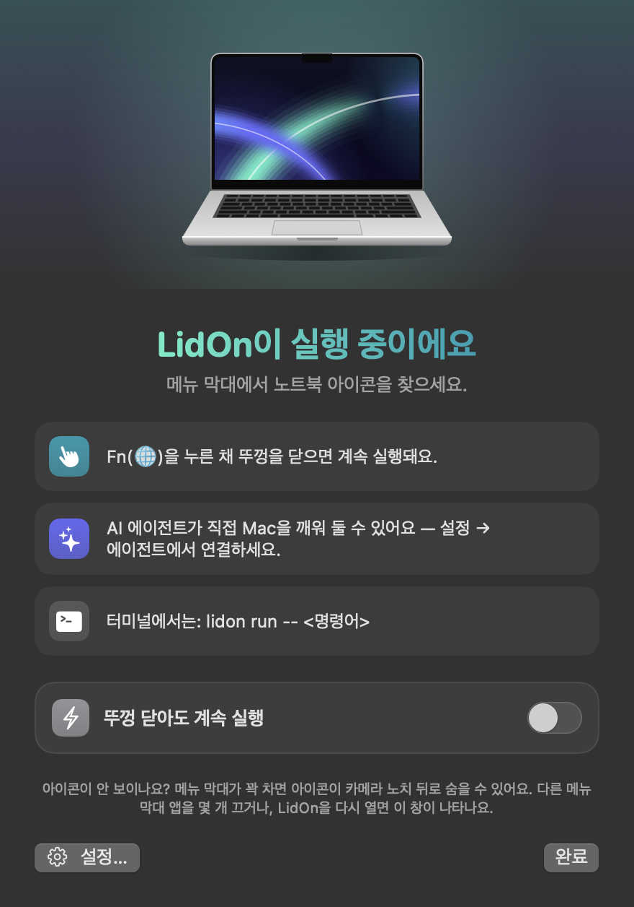

Three ways to keep it running
LidOn keeps the Mac awake only while there's a reason to — and lets it sleep again as soon as that reason is gone.
Hold Fn, close the lid
Hold Fn for half a second and close the lid. Let go — you still have 3 seconds. Pressing another key or clicking cancels it.
Menu bar toggle
Keep running until you turn it off, or for 30 minutes to 8 hours. Or press ⌃⌥⌘L from anywhere.
Your AI agent asks
Claude Code, Codex or Cursor call keep_awake before long work and allow_sleep when they're done.
From the terminal
lidon run -- npm test keeps the Mac awake exactly as long as the command runs.
Built for AI coding agents
LidOn doesn't guess whether an agent is busy. It ships an MCP server so agents ask for it themselves — with a reason and a time limit — and a skill that tells them when to.
| Tool | What it does |
|---|---|
keep_awake | Keep the Mac awake for a reason and a time limit (max 12 h). Replies with the expiry and any warnings. |
allow_sleep | Release it. If the lid is closed, the Mac sleeps. |
notify | Ping you on the Mac and your phone — and report where it actually landed. |
lidon_status | Lid, battery, temperature and active requests. |
# Claude Code plugin (MCP server + skill) /plugin marketplace add jayden0903/LidOn /plugin install lidon@lidon # or connect any agent in one command lidon setup claude lidon setup codex lidon setup cursor
Requests are released when the agent says so, when time runs out, or when the agent session ends — even if it crashes.
Safe by default
Running a closed laptop is only a good idea if something is watching it.
🌡 Heat
Sleeps when macOS reports serious thermal pressure or the battery reaches 45 °C.
🔋 Battery
Sleeps at 10 % when unplugged. Both limits are adjustable.
🛟 Watchdog
If LidOn crashes, hangs or is force-quit, a separate process restores normal sleep immediately.
📱 Phone notifications
ntfy, Slack, Discord or a webhook — before the Mac goes to sleep, so you know why.
Looks at home on your Mac
Menu bar status, battery and temperature at a glance, live countdowns for agent requests. English and Korean.


FAQ
How is this different from caffeinate or pmset?
caffeinate prevents idle sleep, but a MacBook still sleeps when the lid closes (unless it's plugged in with an external display). pmset disablesleep 1 works but needs sudo, has no safeguards, and stays on until you undo it. LidOn needs no admin rights, turns itself off when the reason is gone, and can be driven by agents.
Does it drain the battery?
LidOn itself idles at roughly 0.1–0.3 % CPU, and animations only run while its windows are visible. The work you keep running is what uses power — plug in for long jobs.
What permissions does it need?
None of Accessibility, Input Monitoring or Screen Recording. Installation asks for your password once, to allow exactly pmset -a disablesleep 0|1 so plugging in a charger or display with the lid closed can't put the Mac to sleep. Notifications are optional.
Why isn't it notarized?
It's a free project without an Apple Developer account yet. Homebrew and the install script clear the quarantine flag; all the source is on GitHub.
Could a macOS update break it?
It uses an undocumented power-management interface, so it could. Test after major updates and open an issue if anything changes.
Get LidOn
macOS 14 Sonoma or later · MacBook with Apple silicon or Intel
brew install --cask jayden0903/tap/lidoncurl -fsSL https://raw.githubusercontent.com/jayden0903/LidOn/main/install.sh | bash